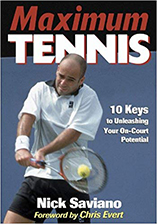

← Bài trước: Optimize Your Technique – Part 1 | 🏠 Famous Coaches Trang chủ | Bài tiếp: → Optimize Your Technique – Part 3
Tối ưu kỹ thuật của bạn – Phần 2
Thư viện kiến thức quần vợt toàn diện — Căn bản, Phân tích cú đánh, Thư viện tham khảo và nhiều hơn nữa
Tối ưu kỹ thuật của bạn – Phần 2
Bởi Nick Saviano
Trong phần 2 của loạt bài này được trích từ Maximum Tennis: 10 Keys to Unleashing Your On-Court Potential, Nick Saviano phân tích những căn bản thực sự của cú đánh đất chuẩn thế giới. (Nhấn vào đây để xem Phần 1) Để biết thêm thông tin về việc đặt hàng cuốn sách mới của Nick, xem bên dưới.
Bạn có thể có những cú đánh đẹp nhất thế giới, nhưng nếu bạn không có những căn bản vững chắc trong việc di chuyển đến bóng và chuẩn bị để đánh, phần còn lại của cú đánh sẽ là một trò chơi may rủi.
Sự chuẩn bị tốt sẽ không chỉ cho phép bạn tối đa hóa sự kiểm soát và sức mạnh, mà còn quan trọng trong việc giúp bạn thích ứng với sức mạnh tăng lên trong trò chơi ngày nay.
Cú đánh đất
Những kỹ thuật căn bản trong việc chuẩn bị để đánh một cú đánh là bước chia đôi; xoay thân đồng bộ; di chuyển đến bóng (hoặc theo dõi); chuẩn bị vợt, và mẫu cú đánh. Nếu bạn cải thiện bất kỳ hoặc tất cả các khu vực này, mức độ chơi của bạn sẽ cải thiện đáng kể.
Bước chia đôi
Bước chia đôi là một kỹ thuật quan trọng mà một tay vợt sử dụng để đưa cơ thể vào vị trí để di chuyển đến bóng theo bất kỳ hướng nào nhanh nhất có thể và đó là một trong những căn bản cơ bản nhất của bộ chân trên sân quần vợt.
Bạn nên thực hiện bước chia đôi mỗi khi tay vợt đối thủ tiếp xúc với bóng. Một bước chia đôi đúng đắn có lẽ là khía cạnh quan trọng nhất của bộ chân di chuyển. Thực hiện bước chia đôi vào thời điểm đúng sẽ thiết lập cân bằng của bạn để bạn có thể nổ đến bóng một cách mạnh mẽ sau khi nhận ra hướng của cú đánh.
Ngoài ra, nó nâng cao trạng thái tinh thần của bạn vào thời điểm quan trọng khi bóng đang bay từ vợt của đối thủ. Điều này giúp tối đa hóa khả năng dự đoán của bạn về cú đánh sắp tới.
Khi Andre Agassi thực hiện bước chia đôi, chân trái của anh chạm đất nhưng chân phải xoay theo hướng anh đang đi trước khi chạm đất trên sân.
Bước chia đôi được thực hiện bằng cách uốn gối, hông và gót chân (bạn chỉ cần nghĩ đến việc uốn gối, và hông và gót chân sẽ tự nhiên uốn theo) và nhảy lên không trung, kết quả là giảm trọng tâm của bạn khi chạm đất trên sân.
Thời gian thực hiện bước chia đôi là rất quan trọng. Bắt đầu bước chia đôi khi tay vợt đối thủ bắt đầu tăng tốc vợt của mình để đánh cú đánh. Ngược lại với quan niệm phổ biến, chân của bạn không luôn chạm đất cùng lúc trên bước chia đôi. Thực tế, trong hầu hết các trường hợp, chân của bạn không chạm đất cùng lúc.
Điều xảy ra thực sự là bạn đồng bộ hóa bước chia đôi để bạn ở trên không trung khi bóng bay từ vợt của đối thủ và bạn có thể xác định hướng bóng đang bay trước khi chạm đất. Kết quả là chân xa bóng nhất chạm đất trước, trong khi chân gần bóng nhất xoay để chỉ vào hướng của cú đánh trước khi chạm đất. Điều này cho phép bạn thực hiện bước đầu tiên nổ đến bóng một cách mạnh mẽ.
Hầu hết các tay vợt thực hiện hành động bước ra này một cách tự nhiên và không nhận ra rằng họ thực hiện bước này. Tôi đề nghị bạn không thực hiện hành động bước ra này - để lại nó cho bản năng. Thay vào đó, tôi đề nghị tập trung vào thời gian thực hiện bước chia đôi.
Để đặt hàng cuốn sách Maximum Tennis: 10 Keys to Unleashing Your On-Court Potential của Nick Saviano, nhấn vào đây.
Xoay thân đồng bộ và chuẩn bị vợt ban đầu
Xoay thân đồng bộ thường là bước đầu tiên mà các tay vợt thực hiện khi họ ra khỏi bước chia đôi. Chân gần nơi bóng đã bị đánh xoay và bước ra theo hướng của bóng trong khi phần trên cơ thể (vai và hông) bắt đầu xoay. Ngược lại với những gì thường được dạy, bạn không muốn lấy vợt của mình về phía sau ở giai đoạn này. Tuy nhiên, sự xoay vai cùng với một sự di chuyển nhẹ về phía sau của khuỷu tay của cánh tay vợt đóng góp vào việc chuẩn bị vợt ban đầu.
Serena Williams vừa hạ cánh từ bước chia đôi, bắt đầu xoay thân đồng bộ, và ở giai đoạn ban đầu của việc chuẩn bị vợt và theo dõi bóng. Lưu ý rằng cô đã di chuyển vợt một cách độc lập rất ít vào thời điểm này.
Di chuyển đến bóng hoặc theo dõi
Sau bước chia đôi và xoay thân đồng bộ, di chuyển của bạn đến bóng khi chuẩn bị để đánh và sau bước phục hồi để quay lại vị trí cho cú đánh tiếp theo là những gì tôi gọi là “theo dõi” bóng.
Điểm quan trọng ở đây là duy trì tư thế tốt - vai và lưng tương đối thẳng với một sự uốn cong nhẹ ở eo - với sự di chuyển tối thiểu của phần trên cơ thể và đầu. Nếu bạn mất cân bằng động và/hoặc cho phép vai và đầu lắc lư hoặc di chuyển lên xuống quá mức, điều đó khiến việc theo dõi bóng đến một cách chính xác trở nên gần như không thể.
Ngoài ra, tư thế tốt cho phép bạn tự do di chuyển về mặt vật lý để đánh bất kỳ cú đánh nào cần thiết. Một lỗi phổ biến là uốn lưng quá mức, điều này phá hủy cân bằng của bạn và hạn chế khả năng tạo ra một cú đánh chất lượng. Như thể bạn là một người mẫu thời trang, hãy nghĩ đến việc cân bằng một cuốn sách trên đầu bạn khi di chuyển đến bóng.
Để lưu trữ năng lượng trong các nhóm cơ lớn, sự xoay vai và uốn gối là quan trọng, như Andy Roddick thể hiện trên cú thuận tay của anh.
Tải cơ
Tôi biết bạn đã được nói một nghìn lần để xoay sang bên khi bạn đánh bóng. Nhưng điều đó không đủ vì nó sẽ không tạo ra đủ sự căng thẳng - lưu trữ năng lượng trong các nhóm cơ lớn khi bạn chuẩn bị để đánh bóng. Hãy tập trung vào việc xoay vai và uốn gối.
Thực tế, bạn sẽ căng thẳng hoặc lưu trữ năng lượng trong các nhóm cơ lớn - ngực, vai, thân, hông, chân - mà bạn không hề nhận ra khi chuẩn bị để đánh bóng. Điều này hoàn toàn quan trọng để tối đa hóa các cú đánh đất và trả giao bóng, đặc biệt là khi một quả bóng được đánh đến bạn với tốc độ lớn.
Khi bạn xoay vai, bạn muốn cảm thấy sự “kéo” ở vai trước. Đây là một phần quan trọng của việc chuẩn bị vợt của bạn vì, một khi bạn có được “tải” này, bạn sẽ tự động đã thực hiện khoảng một nửa phần mở vợt của mình với sự di chuyển tối thiểu của cánh tay vợt.
Tải cơ của bạn theo cách này cũng sẽ cho phép bạn tạo ra một lượng lớn sức mạnh với một phần mở vợt tương đối ngắn. Đây là một mẹo để giúp bạn thực hiện điều này. Để có cảm giác về việc tải cơ của mình, hãy có ai đó ném cho bạn một quả bóng dễ. Trước khi bạn bước qua bóng, hãy xoay phần trên cơ thể và uốn gối để chuẩn bị. Bạn sẽ ngay lập tức cảm thấy quá trình tải trong các nhóm cơ lớn của mình.
Chuẩn bị vợt
Khi chuẩn bị vợt của bạn, hãy xem xét những điều sau: phần mở vợt, thế đứng, và khu vực đánh.
Phần mở vợt. Một điều hư cấu rằng một tay vợt nên lấy vợt của mình về phía sau khi chuẩn bị để đánh bóng. Thời điểm mà cánh tay vợt của bạn thực sự bắt đầu lấy vợt về phía sau khác nhau tùy thuộc vào phong cách chuẩn bị vợt khác nhau. Tuy nhiên, vợt thường không di chuyển một cách độc lập cho khoảng cách đáng kể cho đến khi hầu hết quá trình xoay của bạn được hoàn thành.
Kỹ thuật, khuỷu tay của cánh tay vợt trên cú thuận tay sẽ di chuyển nhẹ về phía sau khi xoay vai và hông bắt đầu; tuy nhiên, nó nên cảm thấy như thể vai và hông là những gì đang xoay tại thời điểm đó.
Phần mở vợt khác nhau đáng kể giữa các tay vợt. Bạn có thể lấy vợt của mình về phía sau một cách tương đối thẳng, trong một vòng lớn, trong một vòng nhỏ, dẫn đầu với khuỷu tay, hoặc sử dụng các động tác khác. Những điều này chủ yếu là các chức năng của phong cách, không phải là căn bản; do đó, chúng sẽ không được đề cập ở đây. Điều quan trọng là tránh các cực đoan và đạt được sự xoay tốt của phần trên cơ thể.
Williams đánh một cú trái tay với thế đứng mở. Lindsay Davenport đánh một cú trái tay với thế đứng vuông góc. Gustavo Kuerten đánh một cú trái tay một tay với thế đứng đóng. Lưu ý sự xoay và tải vai trong tất cả ba tay vợt.
Thế đứng.
Ba loại thế đứng cơ bản cho tất cả các cú đánh quần vợt là mở, vuông góc, và đóng. Đã có một sự thay đổi đáng kể trong trò chơi hướng đến thế đứng mở trên cả hai bên thuận tay và trái tay. Đây là một giải thích ngắn gọn về mỗi loại.
Thế đứng mở. Thế đứng mở hiện là cách di chuyển bộ chân phổ biến nhất với cú thuận tay và đang trở nên ngày càng phổ biến hơn trên bên trái tay. Để thực hiện một cú đánh đất với thế đứng mở, hãy căn chỉnh chân sau của bạn gần với đường bay của bóng, với chân trước xa hơn và vai vuông góc với lưới, trái ngược với việc đánh bóng trong thế đứng vuông góc hoặc đóng với vai của bạn xoay vuông góc với lưới và chân của bạn căn chỉnh với đường bay của bóng.
Sử dụng thế đứng mở tiết kiệm khoảng một bước và làm cho quá trình phục hồi nhanh hơn. Ngoài ra, bạn có thể có được sự xoay phần trên cơ thể nhiều hơn với thế đứng mở, điều này mang lại cho bạn nhiều sức mạnh hơn. Thế đứng mở được sử dụng trên trái tay nhiều hơn bởi những tay vợt đánh hai tay, nhưng nó đang trở nên phổ biến hơn với những tay vợt đánh một tay, cũng vậy.
Thế đứng vuông góc. Trong thế đứng vuông góc, chân trước và chân sau của bạn vuông góc với lưới. Trọng lượng được chuyển tiếp về phía trước theo hướng của cú đánh khi bạn bước vào cú đánh. Thế đứng này rất tốt cho cân bằng và đánh một cú đánh được kiểm soát.
Thế đứng đóng. Trong thế đứng đóng, chân trước bước qua chân sau của bạn để cơ thể của bạn ở một góc hướng về phía hàng rào bên. Thế đứng đóng không nên được sử dụng để đánh một cú thuận tay, đặc biệt là với nắm tay đông, nắm tay bán tây, hoặc nắm tay tây. Nó thường chỉ hiệu quả trên bên trái tay, và lựa chọn đầu tiên của bạn luôn nên là sử dụng thế đứng vuông góc nếu có thể.
Trong suốt quá trình thi đấu, bạn có thể sử dụng tất cả ba thế đứng. Thế đứng nào bạn sử dụng trên một cú đánh cụ thể sẽ phụ thuộc vào kỹ thuật cá nhân của bạn và cú đánh cụ thể bạn đang đánh. Điểm quan trọng là học cách sử dụng thế đứng sẽ giúp tối đa hóa cú đánh của bạn.
Khu vực đánh. Khu vực đánh là khoảng cách từ cơ thể của bạn mà bóng được tiếp xúc. Để phát triển các cú đánh nhất quán, bạn cần thiết lập khu vực đánh tối ưu của mình và luôn đánh bóng trong khu vực đó.
Roger Federer tiếp xúc với bóng trên cú trái tay của anh trong khu vực đánh tối ưu của anh. Kim Clijsters tiếp xúc với bóng trên cú thuận tay của cô trong khu vực đánh tối ưu của cô.
Điểm tiếp xúc thực tế (khoảng cách từ trước cơ thể bạn mà bóng được tiếp xúc) sẽ khác nhau tùy thuộc vào loại cú đánh được đánh. Tuy nhiên, khu vực đánh của bạn nên thay đổi ít nhất có thể. Cơ bản, nó nên là một khoảng cách thoải mái từ cơ thể mà cho phép bạn tự do thực hiện cú đánh. Hãy nhớ rằng, đưa cơ thể vào vị trí lý tưởng để tiếp xúc với bóng là mục tiêu chính của bộ chân di chuyển tốt.
Mẫu cú đánh
Vị trí của đầu vợt tại thời điểm tiếp xúc là yếu tố quan trọng nhất trong một cú đánh. Đối với hầu hết các cú đánh đất, mặt vợt tại thời điểm tiếp xúc sẽ rất gần với thẳng đứng, cho phép hoặc trừ một vài độ. Thêm xoáy vào bóng có nhiều hơn liên quan đến đường đi của vợt qua cú đánh hơn là việc mở hoặc đóng đầu vợt.
Đối với cú đánh đất chuẩn hoặc cú đánh đất có xoáy lên, đường đi cơ bản của vợt của bạn là một chuyển động từ thấp đến cao, hoặc một chuyển động lên cao thông qua khu vực đánh. Mức độ xoáy lên bạn muốn càng cao, mức độ đường đi từ thấp đến cao càng cực đoan. Một số tay vợt chuyên nghiệp có góc lên đến 50 độ trên phần chuyển động lên cao. Tạo ra nhiều xoáy lên yêu cầu một lượng lớn gia tốc vợt lên cao thông qua khu vực đánh.
Lleyton Hewitt kéo phần vung vợt của mình xa đến tận mục tiêu trước khi bắt đầu cuốn.
Một chuyển động từ cao đến thấp, hoặc một chuyển động xuống thấp của vợt thông qua thời điểm tiếp xúc tạo ra xoáy xuống hoặc xoáy cắt trên các cú đánh đất. Bạn nên bắt đầu ở một vị trí cao hơn một chút so với đường bay của bóng đến và đánh theo một đường đi xuống và ra hướng mục tiêu của bạn. Ngay cả khi bạn mở mặt vợt đáng kể khi chuẩn bị để đánh và trên phần vung vợt cho cú cắt, mặt vợt tại thời điểm tiếp xúc chỉ mở một chút.
Follow-Through
Phát triển công nghệ vợt mới và sự tiến hóa kỹ thuật (thay đổi cách cầm vợt, xoáy cuộn, và tìm kiếm sức mạnh tối đa) đã tăng tốc độ của đầu vợt trên tất cả các cú đánh, điều này đã ảnh hưởng sâu sắc đến pha vung vợt theo đà và cách dạy dỗ nó.
Điều quan trọng nhất về pha vung vợt theo đà là, nếu bạn có một đường đánh vợt tốt dẫn đến và đi qua khu vực đánh bóng, pha vung vợt theo đà sẽ tự nhiên xuất hiện. Nói cách khác, góc độ và quỹ đạo của đầu vợt tại điểm tiếp xúc bóng là những yếu tố kỹ thuật ảnh hưởng đến vị trí bóng bay.
Bóng chỉ tiếp xúc với dây vợt trong khoảng 4 miligiây, điều này có nghĩa là bóng đã biến mất trước khi bạn hoàn thành thậm chí một phần của pha vung vợt theo đà. Do đó, có thể suy luận rằng pha vung vợt theo đà không thực sự quan trọng đối với cú đánh hoặc cú đánh, phải không? Sai! Pha vung vợt theo đà là một thành phần quan trọng trên tất cả các cú đánh.
Vince Spadea đánh cú thuận tay với đường đánh vợt từ thấp lên cao để tạo xoáy cuộn.
Pha vung vợt theo đà là một chỉ số tốt để xác định xem bạn có tiếp cận bóng với đường đánh vợt đúng cho cú đánh bạn đang thực hiện hay không. Ví dụ, người chơi thường nói rằng để có xoáy cuộn, bạn phải vượt qua trên đầu hoặc che bóng khi đánh. Thực tế, bạn không vượt qua trên đầu bóng khi đánh mà là xoay mặt vợt nhẹ sau khi đánh khi vung vợt theo đà.
Nhưng, bằng cách có quan niệm này trong tâm trí của bạn về việc che bóng khi đánh, nó có thể thực sự giúp bạn thiết lập đường đánh vợt đúng cho cú đánh. Do đó, mặc dù pha vung vợt theo đà không trực tiếp ảnh hưởng đến quỹ đạo của bóng, nó thực sự ảnh hưởng đến cách bạn tiếp cận bóng.
Justin Gimelstob thể hiện đường đánh vợt từ cao xuống thấp cho cú cắt bóng trái tay.
Một pha vung vợt theo đà tốt cũng giúp ngăn ngừa chấn thương bằng cách giảm căng thẳng cho cánh tay và vai. Dưới đây là một số lời khuyên:
Sau khi tăng tốc thông qua khu vực đánh bóng trên một cú đánh mặt đất, đừng cố gắng dừng hoặc làm chậm pha vung vợt theo đà mà hãy để nó kéo dài một cách tự nhiên. Thường thì điều này sẽ dẫn đến pha vung vợt theo đà bao quanh cổ. Có khoảng cách dài để làm chậm vợt trong pha vung vợt theo đà sẽ ngăn ngừa căng thẳng cho cánh tay và vai. Cách dạy cũ "đánh và giữ kết thúc ở phía trước" trong hầu hết các trường hợp không áp dụng.
Khi học một cú đánh mới hoặc sửa chữa một vấn đề từ mặt đất hoặc tại lưới, hãy nhớ những lời khuyên này. Giữ mặt vợt ở đúng đường đánh vợt trong khoảng cách dài sau khi tiếp xúc sẽ tăng cơ hội thực hiện cú đánh chính xác. Điều này cũng đúng cho cả cú đánh lưới, cũng như cú đánh mặt đất.
Một lời khuyên khác là kéo dài pha vung vợt theo đà qua khu vực đánh bóng và ra khu vực mục tiêu trước khi cho phép nó bao quanh. Cả hai chiến thuật này sẽ giúp bạn học cách kiểm soát đầu vợt qua khu vực đánh bóng quan trọng. Trong trường hợp bình thường, pha vung vợt theo đà sẽ mạnh mẽ hơn, đi vào và ra khỏi khu vực đánh bóng rất nhanh chóng. Tuy nhiên, nếu bạn gặp khó khăn trong việc kiểm soát bóng, những lời khuyên này sẽ giúp bạn.

Trong Maximum Tennis, Nick Saviano nêu ra 10 đặc điểm mà tay vợt hàng đầu có chung và chỉ cho bạn cách phát triển chúng cho chính mình. Đọc cuốn sách được đánh giá cao của Nick, bạn sẽ học cách: Chơi từ trái tim. Đơn giản hóa các cú đánh của mình. Tập trung vào những yếu tố bạn có thể kiểm soát. Chơi theo điểm mạnh cá nhân của mình. Và nhiều hơn nữa. Với kinh nghiệm của mình như một tay vợt, giáo viên và huấn luyện viên, Nick mô tả các quá trình phát triển được theo dõi bởi tay vợt hàng đầu thế giới. Trong ngôn ngữ rõ ràng và súc tích, anh ấy nêu ra các khái niệm mà bất kỳ tay vợt nào cũng có thể học được - và mọi huấn luyện viên cũng có thể dạy - để giúp bạn đạt được tiềm năng đầy đủ và nâng cao tình yêu của mình với môn thể thao. Nhấn vào đây để đặt hàng!

Nick Saviano là một trong những huấn luyện viên phát triển hàng đầu thế giới và là người sáng lập và giám đốc của Saviano High Performance Tennis Academy, tọa lạc tại Davie, Florida. Là một tay vợt trẻ Mỹ hàng đầu trước đây và là một trong hai All-American tại Stanford, Nick đã chơi trên tour chuyên nghiệp trong một thập kỷ, được xếp hạng trong top 50 về đơn, và có những trận thắng trước nhiều tay vợt hàng đầu thế giới top 10. Anh cũng là giám đốc huấn luyện viên nam và giáo dục huấn luyện viên trước đây của USTA. Nick đã dẫn đầu như một người trình bày tại các hội nghị huấn luyện viên trên khắp thế giới và cuốn sách được đánh giá cao của anh ấy "Maximum Tennis: 10 Keys to Unleashing Your On-Court Potential" là một tiêu đề hướng dẫn bán chạy.
Nhấn vào đây để biết thêm thông tin về việc huấn luyện với Nick Saviano.
Nguồn: tennisplayer.net lưu trữ — Optimize Your Technique – Part 2.docx (Thư viện giảng dạy của John Yandell, 2002-2022). Trích xuất và hiển thị dưới dạng HTML cho Tennis Future Lab.